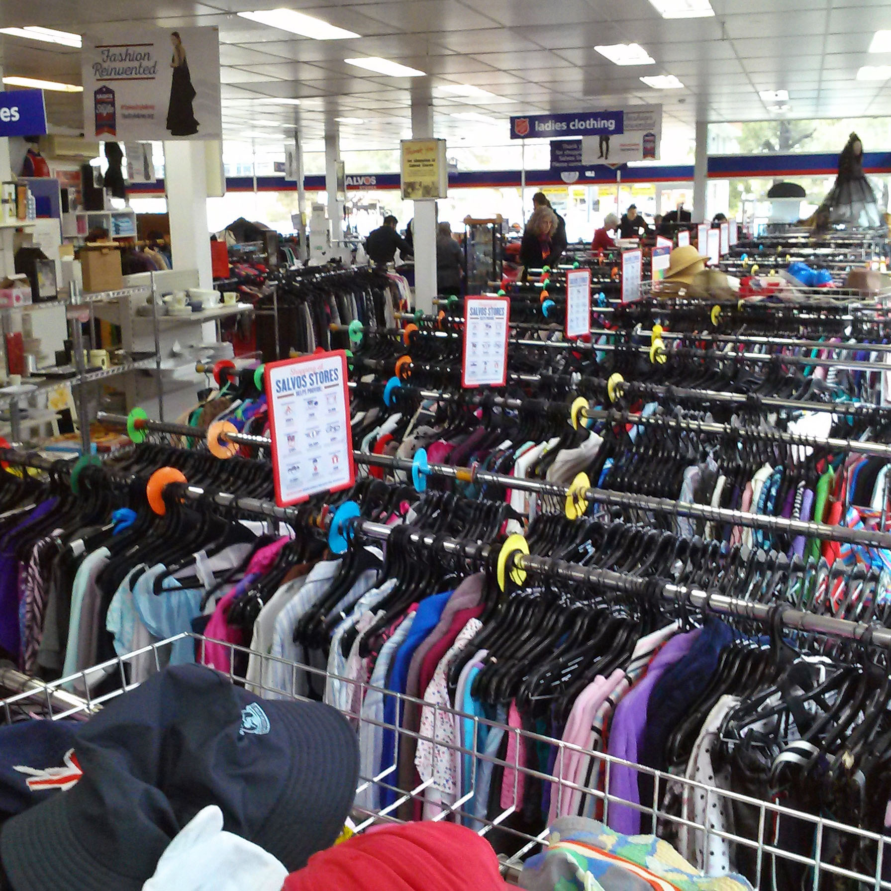
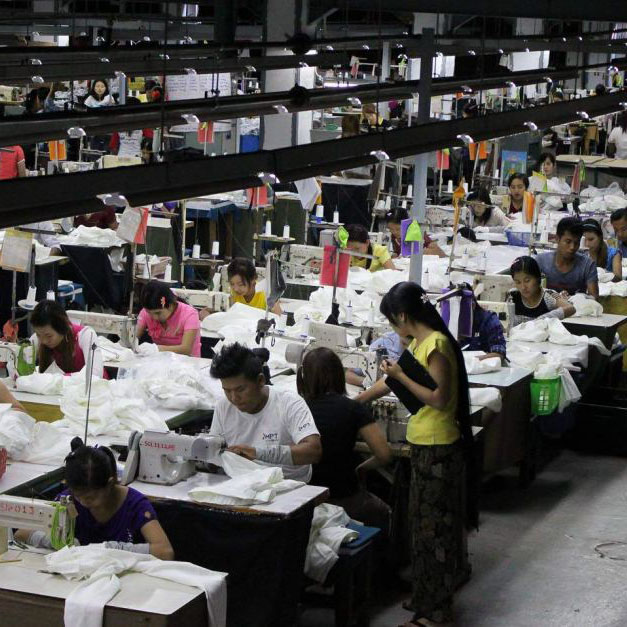
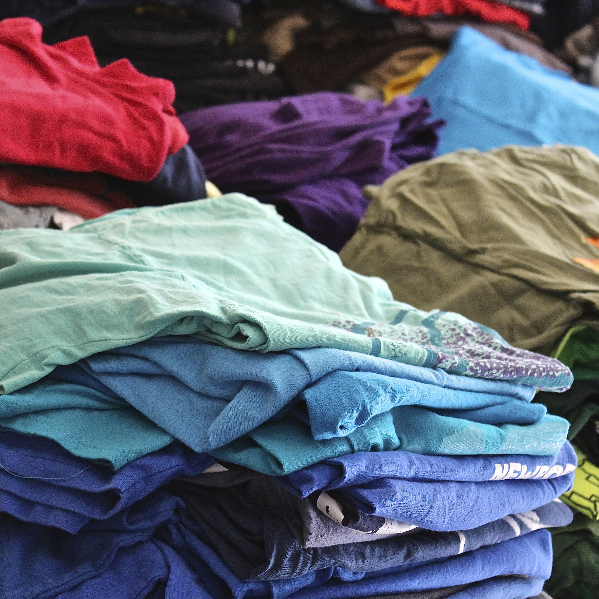

The
Solution
Vintage / Op-Shops

IMAGE CREDIT
Inside The Salvation Army
Making the most of the old
Op-Shops and Vintage stores are becoming ever more popular for a new way of buying clothes.
Buying second-hand is a great way to contribute a small part in preventing the pollution of our planet, which is caused through the clothing industry. You never know you may find some amazing steals!
Research the brand

IMAGE CREDIT
Inside a clothing factory
Look before you buy
Look at the brands you are buying. If you want to do your part, start by researching about the brand that you are buying from. Research their ethical ratings and find out if they are hiding anything. How do they treat their staff etc.
Quality over Quantity

IMAGE CREDIT
Pile of T-Shirts
Buy one not five
Start to think about the quantity of clothing you have and ask yourself do I need another T-Shirt. Start to look at the brand and the quality of it, start to think about paying that little bit extra for the quality, which will benefit you in the long run. Instead of buying five cheap T-Shirts, buy one that will last longer and that has less of an impact on the planet.
Think about giving the clothes you don't want anymore to Salvation Armys.
There's always people who need clothing.
Do
your
part.